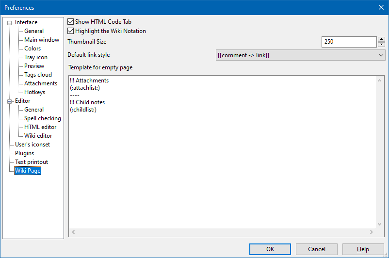

Wiki page

This section contains parameters which affect wiki page general look.
Clicking the "Preview" tab of a wiki note triggers procedure of HTML code autogenerating. The generated code is rendered at the "Preview" tab. Normally, it happens without user interference, however, sometimes it may be desirable to have access to the generated code, for example, to copy and paste it into a web or blog page. The code is listed on the "HTML" tab. As not everyone needs this functionality, so the "HTML" tab is hidden by default. To make it visible, one should select the Show HTML Code Tab check-box.
The Thumbnail size parameter value sets the default thumbnail size. The thumbnails can be created with the %thumb%Attach:filename%% wiki command. It should be taken into account that thumbnail size value set in specific wiki tag has precedence and thus overrides the value of this parameter.
Links of the wiki notes can be of two formats:
- [[Link -> Comment]]
- [[Comment | Link]]
The Default link style parameter allows to set the default format that is automatically applied to all links inserted via dialogue invoked by Wiki - Link menu or the "Link" button of the toolbar.
If one creates a new wiki page without any content (even space characters), then OutWiker can be forced to show some data about the note on the Preview tab, for example, it can display lists of attachments and/or child pages. The Template for empty page field allows specific templates for such data to be created.